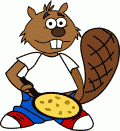

 Castor a préparé des crêpes. Castor a préparé beaucoup de crêpes ! Maintenant, il souhaite les ranger par taille, en mettant la plus grande crêpe en bas de la pile.
Cliquez sur une crêpe pour retourner la partie de la pile se situant au-dessus. Moins vous effectuerez de retournements, plus vous aurez de points.
Une première solution en six18 coups est basée sur un algorithme systématique qui consiste à mettre les crêpes à leur place une par une, en traitant à chaque fois la plus grande crêpe encore mal rangée. Pour placer une crêpe à sa place, il faut d'abord la positionner tout en haut en cliquant dessus, puis cliquer là où on souhaite la placer.
Cette approche systématique ne donne pas le plus petit nombre d'étapes. Ainsi, il y avait aussi une solution en 4513 coups :
Dans cette solution, à chaque coup on se concentre sur le meilleur endroit où placer la crêpe du haut :
L'idée est qu'à chaque coup on se rapproche de la solution en augmentant le nombre de crêpes placées juste à côté de la crêpe à côté de laquelle elles devront se trouver tout à la fin.
On doit cependant éviter les coups qui séparent une crêpe de la crêpe juste un peu plus grande ou juste un peu plus petite et empireraient la situation, donc il faut parfois s'adapter selon la situation. Cette approche n'est donc pas aussi systématique que la précédente, mais donne souvent de meilleurs résultats.
Cet exercice est un problème de tri bien connu, le tri de crêpes, sur lequel beaucoup d'informaticiens se sont penchés, dont Bill Gates.
En informatique, on a très souvent besoin de trier des objets. Selon le type d'objet à trier, et selon les opérations que l'on peut effectuer pour déplacer les objets, différents « algorithmes de tris » peuvent être envisagés. Dans ce sujet, on ne peut pas déplacer les objets individuellement. La seule opération que l'on peut effectuer consiste à inverser l'ordre de tous les objects (les crêpes) du haut de la pile.
La stratégie consistant à récupérer à chaque fois la plus grande crêpe n'étant pas à sa place pour la mettre à sa place correspond à une variante d'un algorithme très connu appelé « tri par sélection ». L'idée étant qu'à chaque étape on « sélectionne » la prochaine crêpe à ranger.
Avec cette stratégie, on est sûr qu'on peut ranger chaque crêpe en au plus 2 retournements. En remarquant que la dernière crêpe (la plus petite) est forcément à sa place lorsqu'on a rangé toutes les autres, on peut conclure que l'on peut toujours ranger les N crêpes de la pile en au plus 2*(N-1) opérations.
Bien sûr, en cherchant bien, on peut généralement réussir à ranger les crêpes avec un nombre légèrement plus petit d'opérations. Cependant, il faut parfois beaucoup réfléchir (ou calculer) pour y arriver. Alors qu'avec un algorithme simple tel que le tri par sélection, il suffit de répéter une seule règle très simple (ranger la plus grande crêpe qui n'est pas à sa place à l'aide de 2 retournements) afin d'arriver à ranger toutes les crêpes, quelle que soit la situation de départ.
C'est cela que l'on vise en général en informatique : un principe simple, qui aboutit à la situation souhaitée en un temps raisonnable, et qui fonctionne sur n'importe quelle situation de départ.